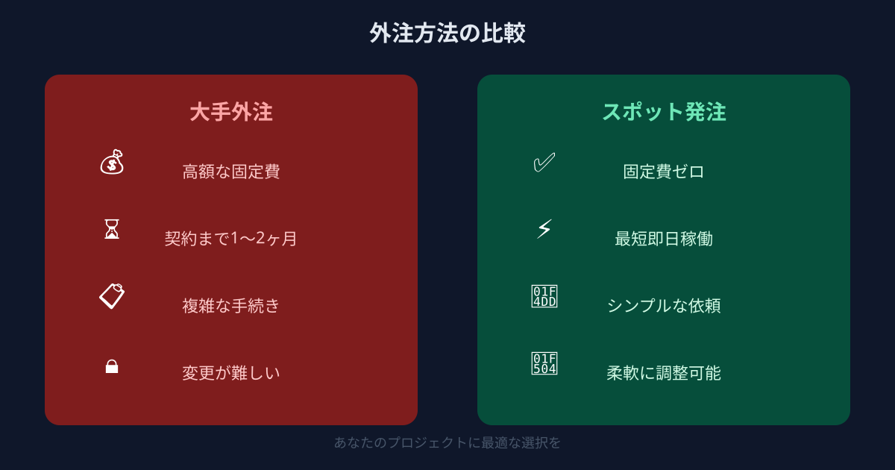
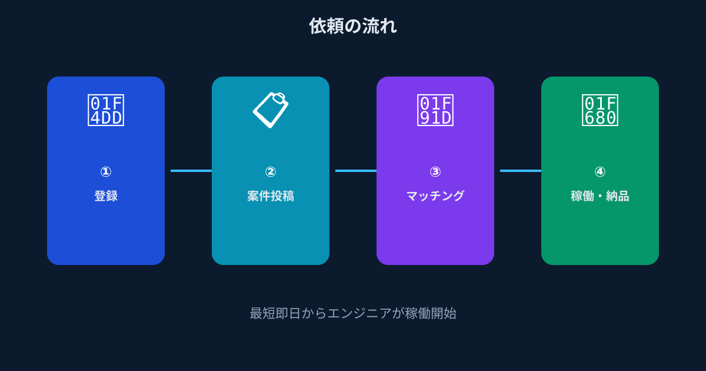

AIを使いたい企業と、AIを作れる人材の間にある深い溝
生成AIが急速に普及し、「ChatGPTを業務に活用しよう」「社内のナレッジをAIで検索できるようにしたい」という声は、企業の規模を問わず広がっています。しかし現実に目を向けると、「やりたいこと」と「できること」の間には、思いのほか大きな溝が横たわっています。
その最大の原因は、AIエンジニアの絶対的な不足です。LLMのAPIを適切に設計し、プロンプトエンジニアリングを理解した上でシステムに組み込める人材は、まだ市場に十分な数がいません。あったとしても、大企業や資金力のあるスタートアップが高い報酬で囲い込んでいる状況です。
「自社でAIを活用したいが、社内にノウハウがない」という中小企業・スタートアップにとって、この状況は非常に不利に見えます。しかし、フルタイムの採用だけが唯一の答えではありません。週末や短期間でスポット参画できるAIエンジニアを活用するという方法が、今現実的な解決策として機能しています。
なぜ「AI人材の採用」では間に合わないのか？フルタイム採用の限界

「それなら採用すればいい」と考える方もいるかもしれません。しかし、AIエンジニアをフルタイムで採用することには、いくつかの現実的な壁があります。
まず、採用期間の問題があります。AIエンジニアの採用は、一般的なエンジニア採用よりもさらに時間がかかる傾向があります。求人公開から内定・入社まで、平均で3〜6か月を要するケースが多く、「今年度中にPoCを試したい」というタイムラインには到底間に合いません。
次に、コストと規模感のミスマッチです。AI開発の初期フェーズでやりたいことは、多くの場合「まず動くものを作って試してみる」ことです。そのためだけに年収600〜800万円以上を想定したAIエンジニアを一人フルタイム採用するのは、リソースの使い方として不釣り合いです。PoC段階で失敗した場合、そのコストは全て埋没します。
そして、技術の変化速度の問題があります。LLMの世界では、数か月で技術スタックが大きく変わります。採用した人材が入社するころには、取り組もうとしていた手法が古くなっている、という事態も珍しくありません。
- 採用活動から入社まで平均3〜6か月かかる
- PoC段階には「1名フルタイム採用」は規模感として過剰
- LLM技術は進化が速く、採用時点で想定した技術が陳腐化するリスクがある
- AIエンジニアの市場単価は高く、中小企業には競争上不利
解決策はスポット発注｜AIに強いエンジニアを週末・短期で活用する

こうした課題に対して、ANKENのマイクロ・マッチングは有効な選択肢を提供します。LLMやRAGなどの最新AI技術に精通したエンジニアが、週末や短期間だけスポット参画できる仕組みです。
発注者はAIの専門知識がなくても構いません。「こんなことをやりたい」という構想をシンプルに伝えれば、それに合った技術選定から実装まで対応できるエンジニアとのマッチングが進みます。プロトタイプやPoC段階であれば、週末2日や1〜2週間の短期稼働だけで「動くもの」が生まれるケースが多いのです。
メリット①｜PoCを最低コストで素早く検証できる
フルスケールの開発に何百万円もかける前に、まず小さく動くものを作って確かめる。このPoC（概念実証）フェーズこそ、スポット発注が最も力を発揮するシーンです。
「このAI機能が本当に役立つか」「技術的に実現可能か」を数万〜数十万円の投資で確かめてから、本格開発の意思決定ができます。従来の開発モデルに比べて、意思決定コストを劇的に下げることができるのです。
メリット②｜最新AI技術（LLM・RAG等）に精通したエンジニアにアクセス
ANKENには、GPT-4oやClaude、GeminiなどのLLM、RAG（Retrieval-Augmented Generation）、LangChain、ベクトルデータベース（Pinecone・Chromaなど）を日常的に扱っているエンジニアが登録しています。
これらの技術は急速に進化しており、書籍の情報は数か月で陳腐化します。最新の現場知識を持つエンジニアに直接アクセスできることが、スポット発注の大きな強みです。メガベンチャーでAI開発の実務経験を積んだ人材なので、趣味レベルではなく実戦投入できる品質の成果物を届けてくれます。
メリット③｜「作ってみて判断する」アジャイルなAI活用が可能に
AIを社内に導入する上で最も大切なのは、仮説→試作→検証→改善のサイクルを速く回すことです。スポット発注はこのアジャイルなアプローチと相性が抜群です。
「まず作る→社員に触らせる→フィードバックを得る→改善する」というサイクルをスポット単位で回すことで、社内のAIリテラシーも自然と高まっていきます。試行錯誤しながら前に進める環境が、最終的に組織全体のAI活用を加速させます。
こんなAI開発ニーズに対応できます｜具体的な活用シーン
「具体的に何を依頼できるの？」という疑問に応えるため、実際に活用されているシーンをご紹介します。
毎週行われる会議の議事録作成に1時間以上かかっていた。ChatGPT APIと音声文字起こしAPIを組み合わせ、議事録の自動生成・要約機能をWebツールとして実装。週末2日のスポット依頼でプロトタイプが完成し、翌週から社内テストを開始できた。
散在している社内マニュアルや規程集を検索するのに時間がかかっていた。RAGを用いたFAQシステムのプロトタイプを1.5週間のスポット依頼で構築。ベクトルDBへの文書格納からチャットUIまで一気通貫で対応してもらえた。
自社が運営するWebサービスにAIアシスタント機能を追加したかったが、既存コードへの影響が心配だった。既存のコードベースを引き継いだ上で、AIチャット機能をモジュールとして後付けする形で実装。既存機能に影響を与えずにスムーズに追加できた。
非エンジニアの営業担当が毎月のExcelデータを分析するのに時間がかかっていた。自然言語でデータ分析の質問ができるPythonベースの社内ツールをスポット依頼で開発。「先月の売上トップ10を教えて」と入力するだけでグラフが生成される仕組みが実現した。
よくある質問
- Q. エンジニアがいなくてもAIツール開発を依頼できますか？
- A. 依頼可能です。週末・短期のスポット発注でAIに強いエンジニアをアサインし、PoCから開発できます。
- Q. どのくらいの期間で開発できますか？
- A. シンプルなPoCなら土日2日程度、本格的なツールでも数週間単位で形にできます。
- Q. ChatGPT APIやRAGの知識がなくても発注できますか？
- A. 問題ありません。実現したい業務課題を伝えれば、技術選定からエンジニアが提案・実装します。
まとめ
AIを業務に活用したいという企業のニーズと、AIエンジニアの市場不足というギャップは、フルタイム採用だけでは解消できません。しかし「週末だけ・短期間だけ・タスク単位で」という柔軟なスポット発注という手段を使えば、中小企業でも今すぐAI開発の第一歩を踏み出すことができます。
PoCを最小コストで試す、実戦経験のあるAIエンジニアに直接アクセスする、アジャイルなサイクルで改善を続ける——この3つを同時に実現できるのが、ANKENのマイクロ・マッチングです。
「まず試してみたい」という段階から相談を受け付けています。どんなAI活用を考えているか、どの程度の規模感か、ざっくばらんに話してみてください。
LLM・RAG・ChatGPT API対応のエンジニアに、週末・短期でスポット発注。PoCから社内ツール開発まで、最速で動きます。
👉 AIエンジニアをスポットで探す登録費用・固定費ゼロ。まず相談するだけでもOKです。